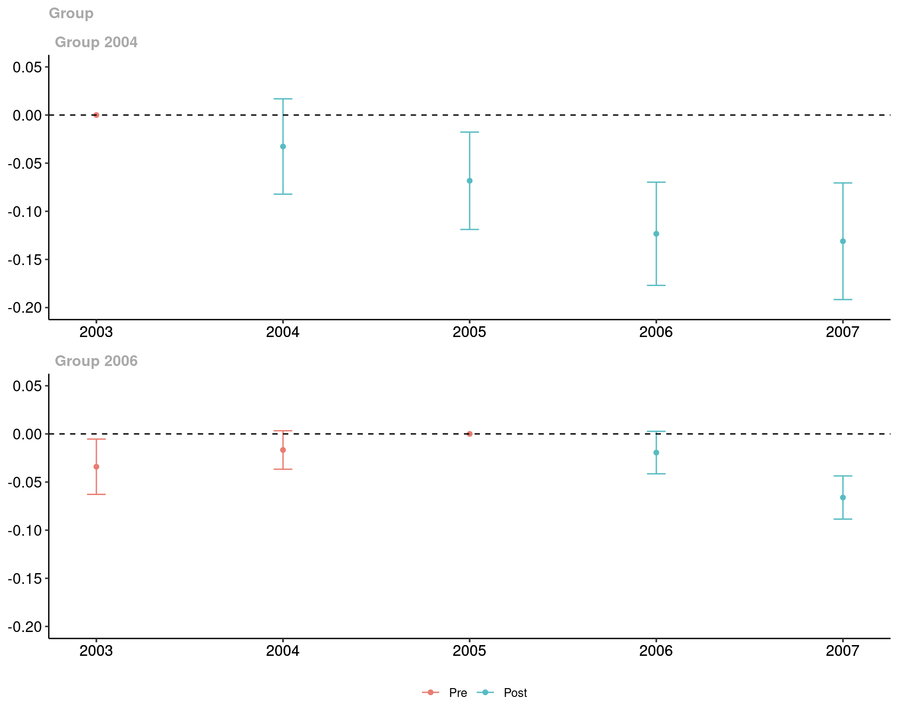
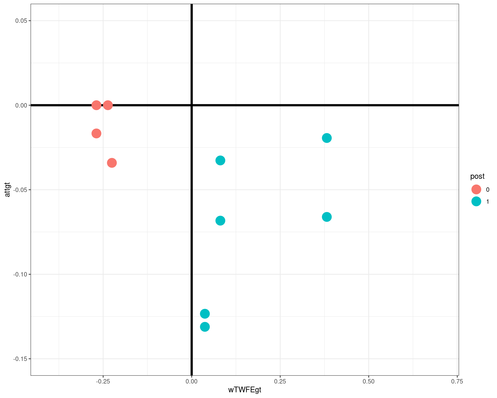
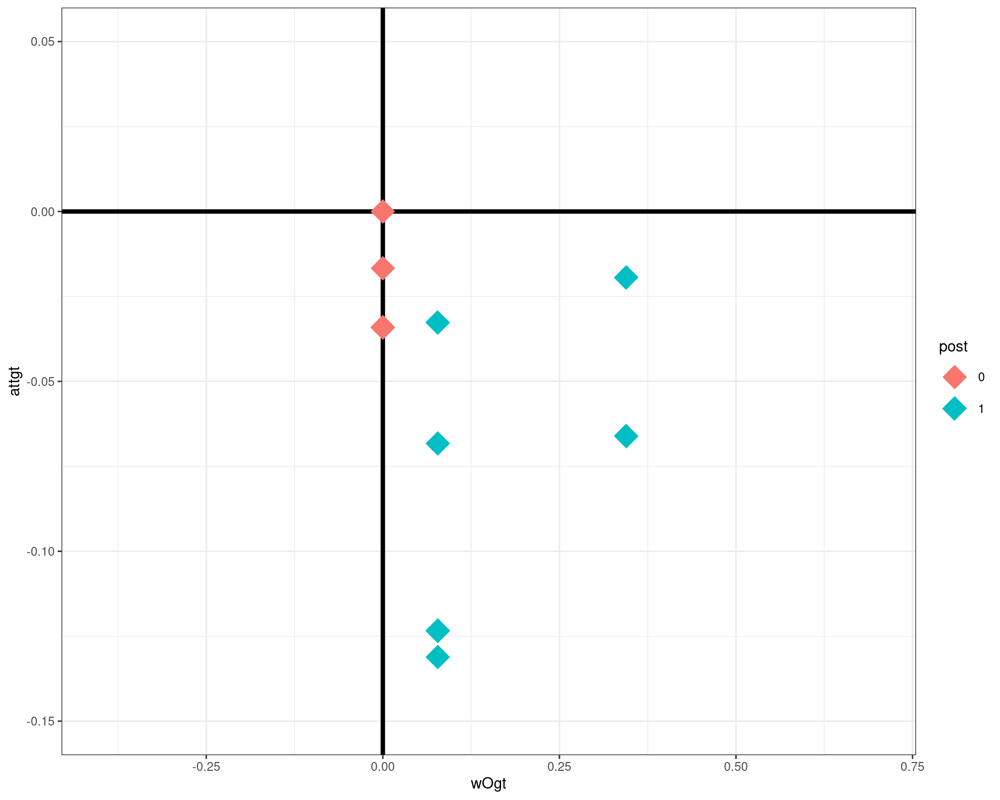
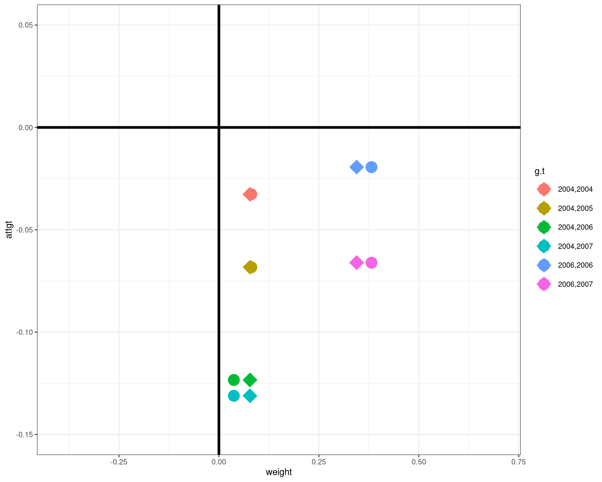
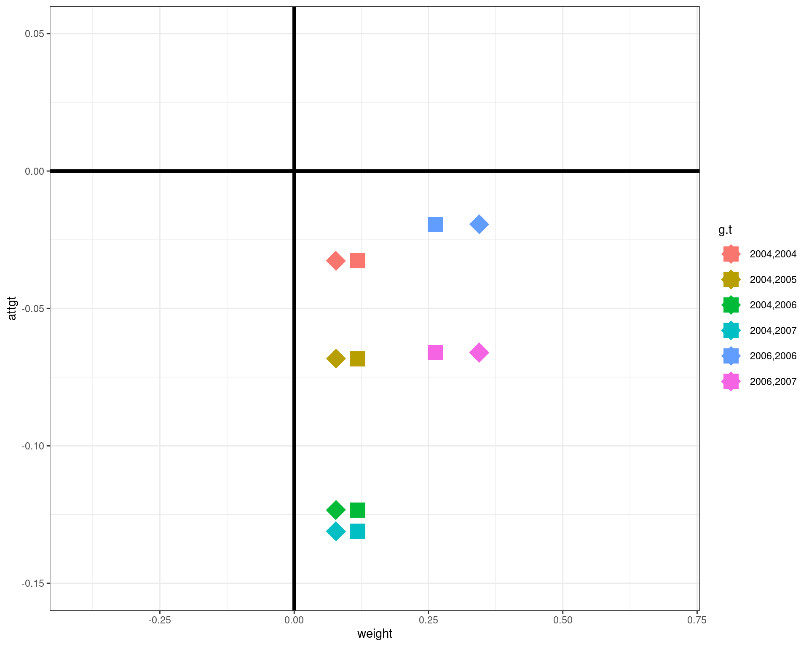

Frontiers in Difference-in-Differences
Introduction to Panel Data Approaches to Causal Inference
October 17, 2023
Introduction
\(\newcommand{\E}{\mathbb{E}} \newcommand{\E}{\mathbb{E}} \newcommand{\var}{\mathrm{var}} \newcommand{\cov}{\mathrm{cov}} \newcommand{\Var}{\mathrm{var}} \newcommand{\Cov}{\mathrm{cov}} \newcommand{\Corr}{\mathrm{corr}} \newcommand{\corr}{\mathrm{corr}} \newcommand{\L}{\mathrm{L}} \renewcommand{\P}{\mathrm{P}} \newcommand{\independent}{{\perp\!\!\!\perp}} \newcommand{\indicator}[1]{ \mathbf{1}\{#1\} }\) Panel data gives researchers the opportunity to follow the same person, firm, location, etc. over multiple time periods
Having this sort of data seems fundamentally useful for learning about causal effects of some treatment/policy variable.
To see this, the fundamental problem of causal inference is that we can either see a unit’s treated or untreated potential outcomes (but not both)
However, with panel data, this is not 100% true. In some cases, we can see both a unit’s treated and untreated potential outcome outcome…just at different points in time
- Example: 2 time periods, a unit is untreated in the first period but becomes treated in the second period
This seems extremely useful for learning about causal effects
Introduction
Panel data approaches are also extremely common in empirical work
- Currie, Kleven, and Zwiers (AER P&P, 2020): 25% of NBER working papers in applied micro use difference-in-differences (i.e., a subset of panel data approaches to causal inference)
Some of this is likely due to the reasons mentioned above, but (at least as importantly) its popularity is due to wide availability of panel data
References:
Callaway (2023, Handbook of Labor, Human Resources and Population Economics)
Baker, Callaway, Cunningham, Goodman-Bacon, Sant’Anna (2023, draft posted very soon)
Setup
Setting: Exploit a data structure where the researcher observes:
Multiple periods of data
Some pre-treatment data for all units
Some units become treated while other units remain untreated
(In my view) this particular data setup is a key distinguishing feature of the approaches that we’ll mainly talk about today relative to traditional panel data models (i.e., fixed effects, dynamic panel, etc.)
- This setup also explains why the methods we consider today are often grouped among “natural experiment” types of methods such as IV or RD.
Running Examples:
Causal effects of a state-level minimum wage increase on employment
Causal effects of job displacement
Setup
Modern approaches also typically allow for treatment effect heterogeneity
- That is, that effects of the treatment can vary across different units in potentially complicated ways
This is going to be a major issue in the discussion below
We’ll consider implications for various estimation strategies as well as for “traditional” regression approaches
Outline of the Course
- Introduction to Difference-in-Differences
- (Brief) Review of Textbook 2 Period Case
- (Brief) Review of Staggered Treatment Adoption
- (Brief) Review of Issues with TWFE Regressions
- Application/Code for Minimum Wage Policy
- Relaxing the Parallel Trends Assumption by Including Covariates
- Dealing with More Complicated Treatment Regimes
- Alternative Identification Strategies
Introduction to Difference-in-Differences
Difference-in-differences
There have been a number of notable advances in recent years on panel data approaches to causal inference.
Many of these have been in the context of differences-in-differences \(\implies\) this is a natural starting point for us
That said, a number of the insights in this literature extend to other identification strategies
- We will return to these issues on Thursday
The Logic of DID
Intuition for DID identification strategy is to compare:
The change in outcomes over time for units that participate in the treatment to
The change in outcomes over time for units that didn’t participate in the treatment
Rough explanation: Compares a treated unit’s outcomes to its past outcomes while making adjustment for common shocks using the comparison group.
Textbook Case with Two Periods
Data:
- 2 periods: \(t^*\), \(t^*-1\)
- No one treated until period \(t^*\)
- Some units remain untreated in period \(t^*\)
- 2 groups: \(D_i=1\) or \(D_i=0\) (treated and untreated)
Potential Outcomes: \(Y_{it}(1)\) and \(Y_{it}(0)\)
Observed Outcomes: \(Y_{it^*}\) and \(Y_{it^*-1}\)
\[\begin{align*} Y_{it^*} = D_i Y_{it^*}(1) +(1-D_i)Y_{it^*}(0) \quad \textrm{and} \quad Y_{it^*-1} = Y_{it^*-1}(0) \end{align*}\]
Target Parameter
Average Treatment Effect on the Treated: \[ATT = \E[Y_{t^*}(1) - Y_{t^*}(0) | D=1]\]
Explanation: Mean difference between treated and untreated potential outcomes in the second period among the treated group
DID with Two Periods
Parallel Trends Assumption
\[\E[\Delta Y_{t^*}(0) | D=1] = \E[\Delta Y_{t^*}(0) | D=0]\]
Explanation: Mean path of untreated potential outcomes is the same for the treated group as for the untreated group
Identification: Under PTA, we can identify \(ATT\): \[ \begin{aligned} ATT &= \E[\Delta Y_{t^*} | D=1] - \E[\Delta Y_{t^*}(0) | D=1] \end{aligned} \]
DID with Two Periods
Parallel Trends Assumption
\[\E[\Delta Y_{t^*}(0) | D=1] = \E[\Delta Y_{t^*}(0) | D=0]\]
Explanation: Mean path of untreated potential outcomes is the same for the treated group as for the untreated group
Identification: Under PTA, we can identify \(ATT\): \[ \begin{aligned} ATT &= \E[\Delta Y_{t^*} | D=1] - \E[\Delta Y_{t^*}(0) | D=1]\\ &= \E[\Delta Y_{t^*} | D=1] - \E[\Delta Y_{t^*} | D=0] \end{aligned} \]
\(\implies ATT\) is identified can be recovered by the difference in outcomes over time (difference 1) relative to the difference in outcomes over time for the untreated group (difference 2)
Estimation
The most straightforward approach to estimation is plugin:
\[\widehat{ATT} = \frac{1}{n_1} \sum_{i=1}^n D_i \Delta Y_{it^*} - \frac{1}{n_0} \sum_{i=1}^n (1-D_i) \Delta Y_{it^*}\]
Alternatively, TWFE regression: \[Y_{it} = \theta_t + \eta_i + \alpha D_{it} + e_{it}\]
- Even though it looks like this model has restricted the effect of participating in the treatment to be constant (and equal to \(\alpha\)) across all individuals, TWFE (in this case) is actually robust to treatment effect heterogeneity.
- To see this, notice that (with two periods) the previous regression is equivalent to \[\begin{align*} \Delta Y_{it} = \Delta \theta_t + \alpha \Delta D_{it} + \Delta e_{it} \end{align*}\] This is fully saturated in \(\Delta D_{it}\) (which is binary) \(\implies\) \[\begin{align*} \alpha = \E[\Delta Y_{it}|D_{it}=1] - \E[\Delta Y_{it}|D=0] = ATT \end{align*}\]
TWFE Regression
It’s easy to make the TWFE regression more complicated:
Multiple time periods
Variation in treatment timing
More complicated treatments
Introducing additional covariates
Unfortunately, the robustness of TWFE regressions to treatment effect heterogeneity or these more complicated (and empirically relevant) settings does not seem to hold
- Much of the recent (mostly negative) literature on TWFE in the context of DID has considered these types of “realistic” settings
More Complicated Treatment Regimes
The arguments above are fairly easy and well-known.
Most applications, however, involve more complicated settings (more periods, more complicated treatment regimes, etc.)
One of the most active areas in causal inference with panel data in the past few years has been to these more “realistic” settings
The first more complicated treatment regime that we’ll discuss is staggered treatment adoption
This has been covered at length in many other places (e.g., other Mixtape sessions and Callaway (2023))
On Thursday, we will consider other (still more complicated) treatment regimes
Setup w/ Staggered Treatment Adoption
\(\mathcal{T}\) time periods
Staggered treatment adoption: Units can become treated at different points in time, but once a unit becomes treated, it remains treated.
- \(D_{it}\) — treatment indicator.
- In math, staggered treatment adoption means: \(D_{it-1}=1 \implies D_{it}=1\).
- \(G_i\) — a unit’s group — the time period that unit becomes treated.
- Under staggered treatment adoption, fully summarizes a unit’s treatment regime
- Define \(U_i=1\) for never-treated units and \(U_i=0\) otherwise.
Examples:
Government policies that roll out in different locations at different times (minimum wage is close to this over short time horizons)
“Scarring” treatments: e.g., job displacement does not typically happen year after year, but rather labor economists think of being displaced as changing a person’s “state” (the treatment is more like: has a person ever been displaced)
Setup w/ Staggered Treatment Adoption
- Potential outcomes: \(Y_{it}(g)\) — the outcome that unit \(i\) would experience in time period \(t\) if they became treated in period \(g\).
- Untreated potential outcome: \(Y_{it}(0)\) — the outcome unit \(i\) would experience in time period \(t\) if they did not participate in the treatment in any period.
- Observed outcome: \(Y_{it}=Y_{it}(G_i)\)
- No anticipation condition: \(Y_{it} = Y_{it}(0)\) for all \(t < G_i\) (pre-treatment periods for unit \(i\))
Unit-Level Treatment Effects
Unit-level treatment effect \[\tau_{it}(g) = Y_{it}(g) - Y_{it}(0)\]
Average treatment effect for unit \(i\) (across time periods): \[\bar{\tau}_i(g) = \frac{1}{\mathcal{T} - g + 1} \sum_{t=g}^{\mathcal{T}} \tau_{it}(g)\]
Target Parameters
- Group-time average treatment effects \[\begin{align*} ATT(g,t) = \E[ \tau_{it}(G) | G=g] = \E[Y_{t}(g) - Y_{t}(0) | G=g] \end{align*}\] Explanation: \(ATT\) for group \(g\) in time period \(t\)
Event Study \[\begin{align*} ATT^{ES}(e) = \E[\tau_{i,g+e}(G) | G \in \mathcal{G}_e] \end{align*}\] where \(\mathcal{G}_e\) is the set of groups observed to have experienced the treatment for \(e\) periods at some point.
Explanation: \(ATT\) when units have been treated for \(e\) periods
- Overall ATT \[\begin{align*} ATT^O = \E[\bar{\tau}_i(G) | U=0] \end{align*}\] Explanation: \(ATT\) across all units that every participate in the treatment
Target Parameters
To understand the discussion later, it is also helpful to think of \(ATT(g,t)\) as a building block for the other parameters discussed above. In particular:
Event Study \[\begin{align*} ATT^{ES}(e) = \sum_{g \in \bar{\mathcal{G}}} w^{ES}(g,e) ATT(g,g+e) \end{align*}\] where \[\begin{align*} w^{ES}(g,e) = \indicator{g \in \mathcal{G}_e} \P(G=g|G\in \mathcal{G}_e) \end{align*}\]
Overall ATT \[\begin{align*} ATT^O = \sum_{g \in \bar{\mathcal{G}}} \sum_{t=g}^{\mathcal{T}} w^O(g,t) ATT(g,t) \end{align*}\] where \[\begin{align*} w^O(g,t) = \frac{\P(G=g|U=0)}{\mathcal{T}-g+1} \end{align*}\]
In other words, if we can identify/recover \(ATT(g,t)\), then we can proceed to recover \(ATT^{ES}(e)\) and \(ATT^O\).
DID Identification of \(ATT(g,t)\)
Multiple Period Version of Parallel Trends Assumption
For all groups \(g \in \bar{\mathcal{G}}\) (all groups except the never-treated group) and for all time periods \(t=2,\ldots,\mathcal{T}\), \[\begin{align*} \E[\Delta Y_{t}(0) | G=g] = \E[\Delta Y_{t}(0) | U=1] \end{align*}\]
Using very similar arguments as before, can show that \[\begin{align*} ATT(g,t) = \E[Y_t - Y_{g-1} | G=g] - \E[Y_t - Y_{g-1} | U=1] \end{align*}\]
where the main difference is that we use \((g-1)\) as the base period (this is the period right before group \(g\) becomes treated).
Extensions/Summary
The previous discussion emphasizes a general purpose identification strategy with staggered treatment adoption:
Step 1: Target disaggregated treatment effect parameters (i.e., group-time average treatment effects)
You can use many existing approaches for this step (generally with very minor modification) that work for smaller problems without staggered treatment adoption
Discussion above has been for DID identification strategy, but other possibilities fit into this framework: conditioning on lagged outcomes, unit-specific linear trends, interactive fixed effects, change-in-changes, triple differences, etc.
Step 2: (If desired) combine disaggregated treatment effects into lower dimensional summary treatment effect parameter
Estimation
We are going to follow the approach in Callaway and Sant’Anna (2021) of directly estimating \(ATT(g,t)\) based on the previous identification result (code is available in R: did, Stata: csdid, Python: csdid):
\[\begin{align*} \widehat{ATT}(g,t) = \frac{1}{n_g} \sum_{i=1}^n \indicator{G_i = g} (Y_{it} - Y_{ig-1}) - \frac{1}{n_0} \sum_{i=1}^n \indicator{U_i = 1} (Y_{it} - Y_{ig-1}) \end{align*}\]
Other approaches
Sun and Abraham (2021), R:
fixest, Stata:eventstudyinteractWooldridge (2021), R:
etwfe, Stata:JWDIDde Chaisemartin and d’Haultfoeuille (2020), R:
DIDmultiplegt, Stata:did_multiplegtGardner (2021) / Borusyak, Jaravel, Spiess (2022), R:
did2s, Stata:did2sanddid_imputation“Clean controls” (Cengiz, Dube, Lindner, and Zipperer (2019) and Dube, Girardi, Jorda, and Taylor (2023)), Stata:
stackedev
See Baker, Larcker, Wang (2022) and Callaway (2023) for more substantially more details.
Additional Issues: Alternative Comparison Group
Above, we used the “never-treated” group (i.e., \(U_i=1\)) as the comparison group, but there are other possibilities:
- Not-yet-treated group: includes both \(U_i=1\) as well as other units that satisfy \(G_i > t\)
- Not-yet-but-eventually-treated group: don’t include \(U_i=1\)
- Other possibilities as well…
Additional Issues: Anticipation
In many applications, units may observe that a policy is about to be implemented and go ahead and change their behaviors before the policy is actually implemented.
- This is straightforward to deal with. If there is one period of anticipation, you can set the base period to be \(g-2\) rather than \(g-1\), so that
\[ATT(g,t) = \E[Y_t - Y_{g-2} | G=g] - \E[Y_t - Y_{g-2} | U=1]\]
Limitations of TWFE Regressions
Goodman-Bacon (2021)
Goodman-Bacon (2021) intuition: \(\alpha\) “comes from” comparisons between the path of outcomes for units whose treatment status changes relative to the path of outcomes for units whose treatment status stays the same over time.
Some comparisons are for groups that become treated to not-yet-treated groups (these are very much in the spirit of DID)
Other comparisons are for groups that become treated relative to already-treated groups (these comparisons are not rationalized by parallel trends assumptions)
- This can be especially problematic when there are treatment effect dynamics. Dynamics imply different trends from what would have happened absent the treatment.
de Chaisemartin and d’Haultfoeuille (2020)
de Chaisemartin and d’Haultfoeuille (2020) intuition: You can write \(\alpha\) as a weighted average of \(ATT(g,t)\)
First, a decomposition: \[\begin{align*} \alpha &= \sum_{g \in \bar{\mathcal{G}}} \sum_{t=g}^{\mathcal{T}} w^{TWFE}(g,t) \Big( \E[(Y_{t} - Y_{g-1}) | G=g] - \E[(Y_{t} - Y_{g-1}) | U=1] \Big) \\ & + \sum_{g \in \bar{\mathcal{G}}} \sum_{t=1}^{g-1} w^{TWFE}(g,t) \Big( \E[(Y_{t} - Y_{g-1}) | G=g] - \E[(Y_{t} - Y_{g-1}) | U=1] \Big) \end{align*}\]
Second, under parallel trends:
\[\begin{align*}
\alpha = \sum_{g \in \bar{\mathcal{G}}} \sum_{t=g}^{\mathcal{T}} w^{TWFE}(g,t) ATT(g,t)
\end{align*}\]
But the weights are (non-transparently) driven by the estimation method
These weights have some good / bad / strange properties such as possibly being negative
Empirical Example
Empirical Example: Minimum Wages and Employment
- Use county-level data from 2003-2007 during a period where the federal minimum wage was flat
Exploit minimum wage changes across states
- Any state that increases their minimum wage above the federal minimum wage will be considered as treated
- Interested in the effect of the minimum wage on teen employment
- We’ll also make a number of simplifications:
- not worry much about issues like clustered standard errors
- not worry about variation in the amount of the minimum wage change (or whether it keeps changing) across states
Goals:
Get some experience with an application and DID-related code
Assess how much do the issues that we have been talking about matter in practice
Code
Full code is available on Mixtape website.
R packages used in empirical example
Setup Data
# drops NE region and a couple of small groups
mw_data_ch2 <- subset(mw_data_ch2, (G %in% c(2004,2006,2007,0)) & (region != "1"))
head(mw_data_ch2[,c("id","year","G","lemp","lpop","lavg_pay","region")]) id year G lemp lpop lavg_pay region
554 8003 2001 2007 5.556828 9.614137 10.05750 4
555 8003 2002 2007 5.356586 9.623972 10.09712 4
556 8003 2003 2007 5.389072 9.620859 10.10761 4
557 8003 2004 2007 5.356586 9.626548 10.14034 4
558 8003 2005 2007 5.303305 9.637958 10.17550 4
559 8003 2006 2007 5.342334 9.633056 10.21859 4TWFE Regression
\(ATT(g,t)\) (Callaway and Sant’Anna)
attgt <- did::att_gt(yname="lemp",
idname="id",
gname="G",
tname="year",
data=data2,
control_group="nevertreated",
base_period="universal")
tidy(attgt)[,1:5] # print results, drop some extra columns term group time estimate std.error
1 ATT(2004,2003) 2004 2003 0.00000000 NA
2 ATT(2004,2004) 2004 2004 -0.03266653 0.020060591
3 ATT(2004,2005) 2004 2005 -0.06827991 0.020485157
4 ATT(2004,2006) 2004 2006 -0.12335404 0.021714005
5 ATT(2004,2007) 2004 2007 -0.13109136 0.024539485
6 ATT(2006,2003) 2006 2003 -0.03408910 0.011639612
7 ATT(2006,2004) 2006 2004 -0.01669977 0.008098019
8 ATT(2006,2005) 2006 2005 0.00000000 NA
9 ATT(2006,2006) 2006 2006 -0.01939335 0.008933296
10 ATT(2006,2007) 2006 2007 -0.06607568 0.009083188Plot \(ATT(g,t)\)’s
Compute \(ATT^O\)
Call:
did::aggte(MP = attgt, type = "group")
Reference: Callaway, Brantly and Pedro H.C. Sant'Anna. "Difference-in-Differences with Multiple Time Periods." Journal of Econometrics, Vol. 225, No. 2, pp. 200-230, 2021. <https://doi.org/10.1016/j.jeconom.2020.12.001>, <https://arxiv.org/abs/1803.09015>
Overall summary of ATT's based on group/cohort aggregation:
ATT Std. Error [ 95% Conf. Int.]
-0.0571 0.0083 -0.0733 -0.0409 *
Group Effects:
Group Estimate Std. Error [95% Simult. Conf. Band]
2004 -0.0888 0.0185 -0.1273 -0.0504 *
2006 -0.0427 0.0083 -0.0600 -0.0255 *
---
Signif. codes: `*' confidence band does not cover 0
Control Group: Never Treated, Anticipation Periods: 0
Estimation Method: Doubly RobustAppendix
Event Study

de Chaisemartin and d’Haultfoeuille weights
\(ATT^O\) weights
Weight Comparison
Discussion
To summarize: \(ATT^O = -0.057\) while \(\alpha^{TWFE} = -0.038\). This difference can be fully accounted for
Pre-treatment differences in paths of outcomes across groups: explains about 64% of the difference
Differences in weights applied to the same post-treatment \(ATT(g,t)\): explains about 36% of the difference. [If you apply the post-treatment weights and “zero out” pre-treatment differences, the estimate would be \(-0.050\).]
In my experience: this is fairly representative of how much new DID approaches matter relative to TWFE regressions. It does not seem like “catastrophic failure” of TWFE, but (in my view) these are meaningful differences (and, e.g., given slightly different \(ATT(g,t)\)’s, the difference in the weighting schemes could change the qualitative results).
- Of course, this whole discussion hinges crucially on how much treatment effect heterogeneity there is. More TE Het \(\implies\) more sensitivity to weighting schemes [just looking at TWFE regression does not give insight into how much TE Het there is.]
Additional Comments on Weights
One more comment: there is a lot concern about negative weights (both in econometrics and empirical work).
There were no negative weights in the example above, but the weights still weren’t great.
- No negative weights does rule out “sign reversal”
- But, in my view, the more important issue is the non-transparent weighting scheme.
- Example 1: If you try using
data3(the data that includes \(G=2007\)), you will get a negative weight on \(ATT(g=2004,t=2007)\). But it turns out not to matter much, and TWFE works better in this case than in the case that I showed you. - Example 2: Alternative treatment effect parameter \(\rightarrow\)
- Example 1: If you try using
“Simple” Aggregation
Consider the following alternative aggregated treatment effect parameter \[\begin{align*} ATT^{simple} := \sum_{t=g}^\mathcal{T} ATT(g,t) \frac{\P(G=g | G \in \bar{\mathcal{G}})}{\sum_{t=g}^{\mathcal{T}} \P(G=g| G \in \bar{\mathcal{G}})} \end{align*}\] Consider imputation so that you have \(Y_{it}-\hat{Y}_{it}(0)\) available in all periods. This is the \(ATT\) parameter that you get by averaging all of those.
Relative to \(ATT^O\), early treated units get more weight (because we have more \(Y_{it}-\hat{Y}_{it}(0)\) for them).
By construction, weights are all positive. However, they are different from \(ATT^O\) weights
“Simple” Aggregation
“Simple” Aggregation
Besides the violations of parallel trends in pre-treatment periods, these weights are further away from \(ATT^O\) than the TWFE regression weights are!
In fact, you calculate \(ATT^{simple} = -0.065\) (13% larger in magnitude that \(ATT^O\))
Finally, if you are “content with” non-negative weights, then you can get any summary measure from \(-0.019\) (the smallest \(ATT(g,t)\)) to \(-0.13\) (the largest). This is a wide range of estimates.
In my view, the discussion above suggests that clearly stating a target aggregate treatment effect parameter and choosing weights that target that parameter is probably more important than checking for negative weights
Comments
The differences between the CS estimates and the TWFE estimates are fairly large here: the CS estimate is about 50% larger than the TWFE estimate, though results are qualitatively similar.
Additional Details